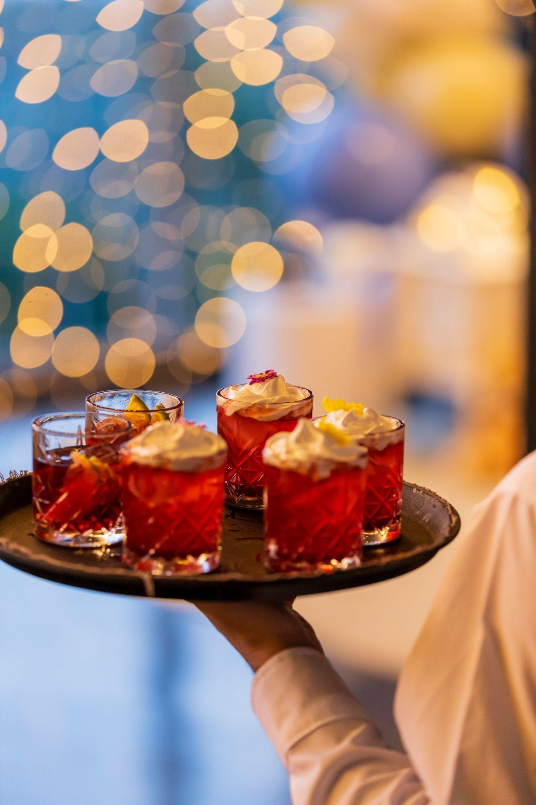
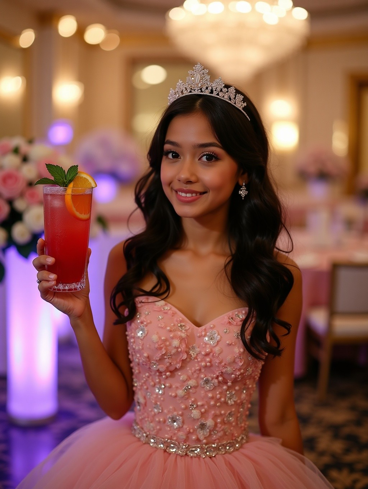

A festa inteira brinda
O drink encontra o convidado, não o contrário. Na mesa, na pista, no meio de uma risada, durante a noite toda.
Serviço volante
Os garçons levam os drinks até cada convidado, em taças e copos de vidro. Funciona como um rodízio: sem limite por convidado.


-
Sem espera
Ninguém fica 10, 15 minutos parado numa fila de bar: o drink chega até você.
-
Sempre um sabor novo
São doze receitas, e os garçons variam o que servem: a cada rodada, uma experiência nova de sabor.
Os valores
Valor por pessoa, fechado no contrato. Com open bar de bebidas na festa, o open de drinks fica mais barato.
A festa tem open bar de bebidas?
Como funciona
-
À vontade, de verdade
Cada convidado bebe a quantidade que quiser, sem custo extra e sem faltar bebida.
-
A conta é uma só
Nada vai pra conta do convidado. O valor fica fechado no contrato, sem surpresa no final.
-
Oito horas de serviço
O open começa depois da cerimônia e acompanha a festa por 8 horas. Quer esticar? Hora adicional por convidado.
-
Zero álcool, sem exceção
Nenhum drink desse open leva álcool. A família aproveita a festa sem precisar ficar de olho no copo de ninguém.